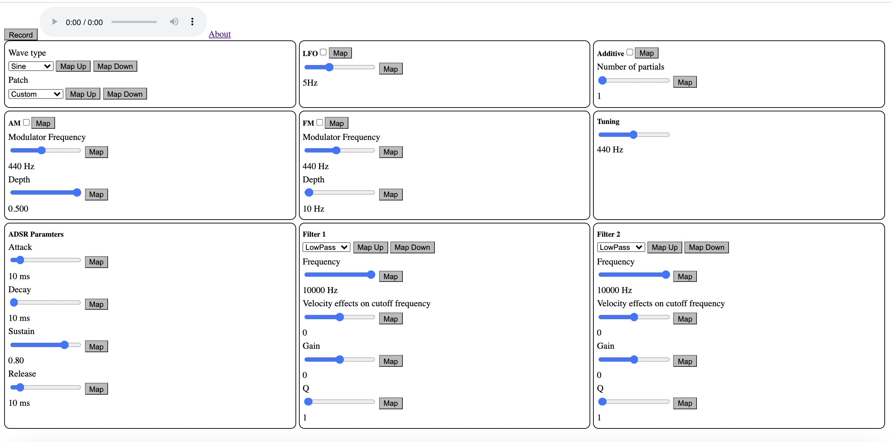

For my computer science class at Barnard, one of our homework assignments was to make a synthesizer with the WebAudio API using computer keyboard inputs. While this synthesizer could accomplish basic AM/FM synthesis and additive synthesis, it was fairly limited. As such, for the course's final project, I decided to expand on this basic synth using MIDI inputs with more synth parameters.

Using the WebMidi API, I was able to easily accept MIDI input and map notes to their corresponding frequencies. Additionally, I used MIDI velocity (how hard a key is pressed) to inform the gain of a note being produced (more on that later). On my original synth, I used the spacebar to act as a sustain pedal. With WebMidi, I was able to simply port this behavior over to the "holdpedal" MIDI message. Finally, I mapped each tunable parameter to MIDI control messages. While I used the midiMaps array to store defaults for my MIDI controller (Nektar Impact LX88+), I also implemented mapping buttons that "listen" to incoming MIDI messages so you can map parameters to the corresponding knobs and sliders on your own controller by pressing the map button and moving whichever physical control you want to set, behaving similarly to mapping features in softwares such as Mainstage.
Each note pressed corresponds to one or more WebAudio oscillators (more if additive synthesis is used), that are all routed into a single global gain node, which is then in turn connected to two biquad filters that can be tuned as desired in the bottom panels, including the option to have MIDI velocity affect the cutoff frequency. This option works by using a positive or negative multiplier which causes the cutoff to increase or decrease, repectively, with an increase in velocity. Additional oscillators are created as needed if AM or FM are selected. A per-note gain node is then enveloped using the ADSR parameters set on the browser page, whose total gain is affected by three multipliers: vel, type_mult, and loudness_mult. vel is a normalized value of the MIDI velocity, while type_mult takes into account the relative loudness of the four different types of waves, as sawtooth waves have more partials than sine waves, therefore sounding louder. Finally, loudness_mult boosts the gain of frequencies below 100Hz in an attempt to account for our ears being less sensitive to lower frequencies. Lastly, the global gain node is cut by the square root of the number of oscillators to ensure that playing polyphonically would not cause clipping while also sounding natural, while and LFO can control the global gain if it is turned on.
While the initial homework assignment had three different techniques (AM, FM, and additive) as different modes you can switch between, real synths only become useful when these are each modularized modes that can be turned on and off in any combination. As such, I reimplemented them to be able to behave this way.
To demonstrate the functionality of this synth, I implemented a few basic patch sounds with the help of the magazine Sound on Sound:
As discussed in these articles, a trumpet sound can be approximated using a sawtooth wave with a short attack passed through a lowpass filter. I also set the velocity to affect the cutoff frequency so louder notes sound brighter.
This article described how to create a flute sound, using a sawtooth wave with no decay phase and a long release. This sound is then passed through both a lowpass and highpass filter, the former of which is affected by velocity. While the article suggested a lowpass cutoff around 2000 Hz, I found 1000 Hz created a better sound, likely because WebAudio's filters have a set rolloff.
I followed this article to create a strings patch. This also used a sawtooth wave, this time with a sharp decay and two filters: a resonant lowpass filter at 3.3 kHz that is affected by velocity, and a highpass filter at 400 Hz. Finally, I use AM and FM synthesis as LFOs to create a slight tremelo and vibrato affects.
I came across this sound while playing around with the settings on this synth. While less sophisticated, adding 9 partials of square waves with a sharp attack and decay creates a convincing clav sound.
Similarly simple, this organ sound is 4 partials of sine waves added on top of each other with a 6 Hz LFO controlling the amplitiude.
Finally, the piano patch roughly followed this article, where I have two sine partials added together with a short attack and a long (7s) decay. I also used a lowpass filter to decrease the brightness, as an electric piano would usually sound. While none of these patches are perfect, they demonstrate a starting off point of what can be accomplished with this synth.
Using the MediaStream Recording API, I was able to also connect the WebAudio output to a stream that is saved as an audio file. Unfortunately, downloaded files do not seem to play correctly locally, but do play well in browser.
I plan to continue improving this synth, adding more synthesis modes (multiple LFOs, more advanced enveloping, selection of a subset of partials or non-integer multipl partials, etc.), along with more refined patch sounds. Additionally, I hope to have functionality where patch sounds that the user creates can be saved locally. In the meantime, check it out yourself and enjoy!